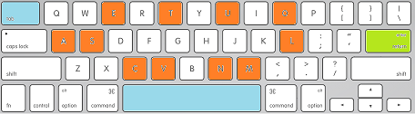

1242.1 Langage C - 2026-2027
1. Syntaxe de printf()
2. Spécifications de format
3. Séquences d'échappement '\'
4. Syntaxe de scanf()
5. Précautions avec scanf()
6. Autres fonctions d'entrée/sortie
Texte, contenu de variables
Les valeurs saisies sont toujours stockées dans des variables.
Ces fonctions nécessitent d’inclure le fichier
1. Un
2. La
3. Les
Liste des variables ou d’expressions à afficher
nb=20;
printf("nb %d x %d\n", nb, 5+2);
nb 20 x 7
| Format | Type | Représentation |
|---|---|---|
| %c | char | caractère simple |
| %s | char * | chaîne de caractères (via un pointeur sur char) |
| Format | Type | Représentation |
|---|---|---|
| %d | int | entier décimal signé |
| %i | int | entier décimal signé (comme |
| %u | unsigned int | entier décimal non-signé |
| %x %X | unsigned int | entier hexadécimal non-signé [a…f] ou [A…F] |
| %o | unsigned int | entier octal non-signé |
| %p | void * | pointeur pur |
| Format | Type | Représentation |
|---|---|---|
| %f %lf | float double | valeur signée |
| %e %E | float double | valeur signée |
| %g %G | float double | Utilise automatiquement le format |
D'autres spécifications de formats peuvent être utilisées par l'instruction
| Type | Format |
|---|---|
| short | %hd |
| long | %ld |
| long long | %lld |
| long double | %Lf |
| size_t | %zu |
| Type | Format |
|---|---|
| unsigned char | %hhu |
| unsigned short | %hu |
| unsigned int | %u |
| unsigned long | %lu |
Un seul
printf("Annee %d, Mois %d, Jour %d\n",1991,5,10);
Annee 1991, Mois 5, Jour 10
La liste d'expressions doit
(a) valeurs supplémentaires → ignorées
(b) valeurs manquantes →
(c) type des expressions ne correspondant pas au format d'affichage →
/* What should have been implemented: */
printf("Year %d, month %d, day %d\n", 1991, 5, 10);
/* 3 types of implementation issues: */
printf("(a) Year %d, month %d\n", 1991, 5, 10 );
printf("(b) Year %d, month %d, day %d \n", 1991, 5);
printf("(c) Year %d, month %d, day %f \n", 1991, 5, 10 );
Year 1991, month 5, day 10
(a) Year 1991, month 5
(b) Year 1991, month 5, day -2120229984
(c) Year 1991, month 5, day 0.000000
Avec le
printf("%c \n", 'Z');
printf("%d \n", 'Z');
printf("%c \n", "Z" );
printf("%s \n", "Zoo");
Z
90
?
Zoo
Avec
$ gcc -Wall -Wextra -Wpedantic -Werror -std=c23 -o errors.exe errors.c
errors.c: In function 'main':
errors.c:5:16: error: too many arguments for format [-Werror=format-extra-args]
errors.c:6:45: error: format '%d' expects a matching 'int' argument [-Werror=format=]
errors.c:7:45: error: format '%f' expects argument of type 'double', but argument 4 has type 'int' [-Werror=format=]
errors.c:8:18: error: format '%c' expects argument of type 'int', but argument 2 has type 'char *' [-Werror=format=]
cc1.exe: all warnings being treated as errors
Lignes 5 à 7 : les cas (a), (b) et (c) ; ligne 8 :
Même (a), qui est défini, est signalé. Avec
Avec les
La spécification de
La spécification de
Les
Largeur et précision existent aussi pour les entiers et les chaînes :
| 1 | 5 | 7 | . | 8 | 9 | 2 | 6 | 0 | 0 |
| 1 | 5 | 7 | . | 9 |
| + | 0 | 0 | 1 | 5 | 7 | . | 8 | 9 |
| 1 | 5 | 7 | . | 8 | 9 | 2 | 6 | 0 |
| 1 | 5 | 7 | . | 8 | 9 | 3 |
157.892600
157.9
+00157.89
157.89260
157.893
Les séquences d'échappement commencent par un backslash
Appelé également
→ escape character
Il existe plusieurs séquences d'échappement : certaines représentent un caractère de contrôle (
En particulier
| Séquence | Caractère | Code ASCII |
|---|---|---|
| \n | retour à la ligne (line feed) | 10 |
| \t | tabulation horizontale | 9 |
| \\ | backslash | 92 |
| \" | guillemet double | 34 |
| \' | apostrophe | 39 |
| \0 | caractère nul (fin de chaîne, chapitre 8) | 0 |
| \r | retour chariot (carriage return) | 13 |
| \a | bip (alert), souvent muet dans les terminaux actuels | 7 |
Liste complète : https://en.wikipedia.org/wiki/Escape_sequences_in_C
/* Bip sonore sur le haut-parleur du PC */
printf("\a");
/* Afficher : C:\EXEMPLES\TOTO.TXT à l'écran. */
printf("C:\\EXEMPLES\\TOTO.TXT");
/* Afficher: "Pardon ?" */
printf("\"Pardon ?\"");
int day, month, year;
scanf("%d/%d/%d",&day, &month, &year);
28 / 11 / 1970 Enter
daymonthyear
1. la
2. des
Liste des adresses des variables à saisir
Les variables sont autorisées à figurer comme paramètres
Les constantes sont interdites
Ainsi
Lors de la saisie, il faut entrer tous les caractères ordinaires de la chaîne de commandes
int day, month, year;
printf("\n\nFill as specified: dd/mm/yyyy ");
scanf("%d/%d/%d", &day, &month, &year);
printf("\nSorted info: %d / %d / %d", day, month, year);
Fill as specified: dd/mm/yyyy 28/11/1970
Sorted info: 28 / 11 / 1970
La chaîne de commandes de
| Format | type | Représentation |
|---|---|---|
| %f | float | valeur signée |
| %lf | double | valeur signée |
En résumé, avec
et avec
Pourquoi ?
Certains caractères jouent un rôle particulier avec
Si l'un de ces caractères fait partie de la chaîne de commande, on peut saisir à l'endroit où il se trouve autant de caractères blancs que l'on désire (ou aucun).
les deux nombres peuvent être séparés par des
espaces
tabulations
retours à la ligne
12 7ENTER
12TAB7ENTER
12ENTER7ENTER
Méthode 1
char a, b;
scanf("%c %c", &a, &b);
x→a ENTER y→b ENTER OK
x→a y→b ENTER OK
x→a y→b ENTER OK
Méthode 2:
char a, b;
scanf("%c", &a);
scanf("%c", &b);
scanf("%c%c", &a, &b);
x→a y→b ENTER OK
x→a ENTER→b y ENTER PAS OK
x→a →b y ENTER PAS OK
En cas de plusieurs scanf, mettre un espace devant
N'accepte que les caractères ABCDEF, ainsi que l’espace ici, dans la variable
Comme vu précédemment, il n'y a pas de signe
Accepte tous les caractères sauf ABCDEF dans la variable ligne
Dès qu’un de ces caractères est trouvé, la saisie s’arrête
Après une saisie, le reste de la ligne (au moins le ENTER)
Pour le jeter, on lit et ignore les caractères jusqu'à la fin de la ligne :
int c;
while ((c = getchar()) != '\n' && c != EOF)
{
}
Lit les variables
La variable
Saisie avec validation
int h, m, status;
do
{
printf("Hour (h:m): ");
status = scanf("%d:%d", &h, &m);
if (status == EOF)
{
return 1; // input closed
}
int c;
while ((c = getchar()) != '\n' && c != EOF)
{
}
} while (status != 2);
Si un message sans
printf("Hour (h:m): ");
fflush(stdout);
scanf("%d:%d", &h, &m);
#include <stdio.h>
int main(void)
{
int year, month, day;
char name1, name2;
printf("First letter in your first name: ");
scanf(" %c", &name1);
printf("First letter in your last name: ");
scanf(" %c", &name2);
printf("Your birthdate (dd/mm/yy): ");
scanf(" %d/%d/%d", &day, &month, &year);
printf("\nYour initials are %c.%c.\n", name1, name2);
printf("You are born on %d/%d/%d\n", day, month, year);
printf("\nASCII CODE: %c=%d, %c=%d\n", name1, name1, name2, name2);
return 0;
}
#include <stdio.h>
int main(void)
{
// Messages are "const char *" because they are not supposed to be modified
const char *enter_your_first_name_msg = "Enter your first name: ";
const char *enter_your_last_name_msg = "Enter your last name: ";
// first_name and last_name are arrays of characters because they are supposed to be modified
char first_name[80];
char last_name[80];
// WARNING: this will not work if the name has a space in it
// %79s: at most 79 characters + '\0' in 80
printf("%s", enter_your_first_name_msg);
scanf("%79s", first_name);
printf("%s", enter_your_last_name_msg);
scanf("%79s", last_name);
printf("Your name is %s %s\n", first_name, last_name);
return 0;
}
Anticipation : tableaux et chaînes de caractères sont vus au chapitre 8.
int ch; // ‘ch’: caractère (int pour détecter EOF)
char line[80]; // ‘line’: chaîne de caractères
int Nmax = sizeof(line);
puts(line); // écrit le texte sur l'écran avec un '\n'*
fputs(line, stdout); // Idem sans '\n'*
gets(line); // lit la variable line au clavier* (supprimé en C11 )
gets_s(line, Nmax); // C11, annexe K optionnelle (absente sous Linux)*
fgets(line, Nmax, stdin); // ou lecture d’un flux (garde le '\n')
putchar(ch); // affiche le caractère ‘ch’ sur l'écran*
ch = getchar(); // Lit le caractère ‘ch’ au clavier (tampon)*
ch = getch(); // Lit le caractère ‘ch’ du clavier (direct, non standard)**
*
char premier, lettre, mot[32], phrase[128];
premier = getch();
scanf("%c",&lettre);
scanf("%31s",mot);
fgets(phrase,128,stdin);
printf("premier : %c\n",premier);
printf("lettre : %c\n",lettre);
printf("mot : %s\n",mot);
printf("phrase : %s\n",phrase);
📝 Et avec

alut comment vas-tu?
| a | l | u | t | c | o | m | m | e | n | t | v | a | s | - | t | u | ? |
Tampon
premier : S
lettre : a
mot : lut
phrase : comment vas-tu?